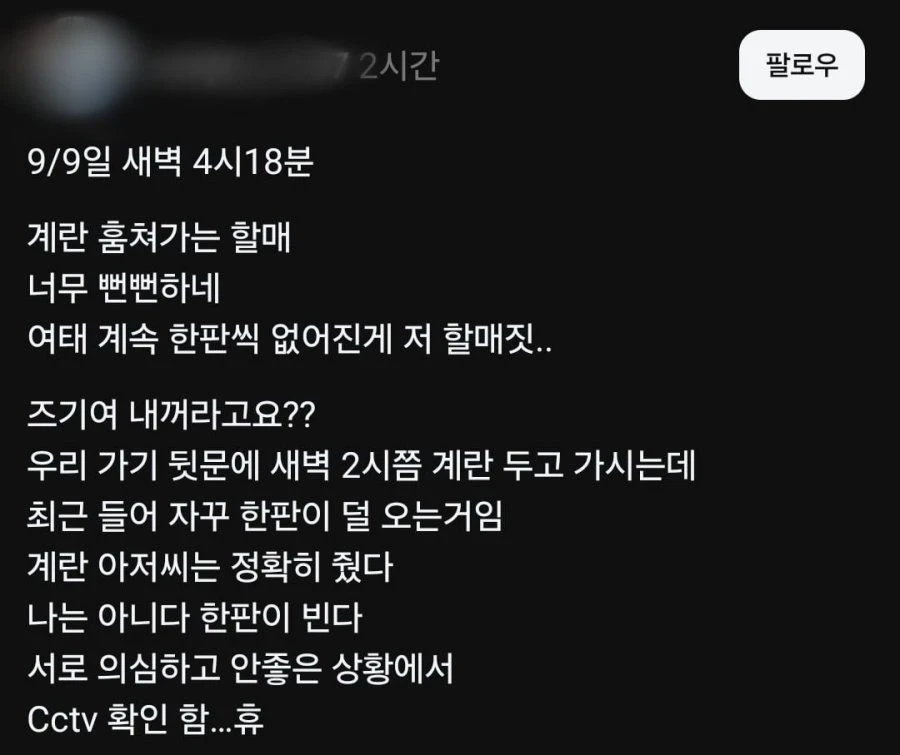

에휴...

에휴...
허리가 나아버린당끼요
우리엄마도 세탁소 하시는데 날씨좋을때 운동화 가게앞에 깔아두면 할매들이 ㅈㄴ집어감
저 진짜 궁금한건데
운동화 각자 세탁소별로 빤다 하잖아요
그거 진짜 각자 하는거임 아니면 그냥 취합해서 어디 맡기고 받는거임?
개별로 하는건 말이 안될정도로 단가 낮던데
내가 지나가다가 운동화빠는 가게 ? 봤는데 진짜 여러명이 신발빨고 세척하고있었음
할매요 걍 뒤지십쇼
평~생 저러고 살았겠지 ㅋㅋ 이제 그만 합시다.
못배워먹어서 그래..... 인생을 평생 저리 살았으니 부끄러움도 없고 그저 목소리 크면 이기는줄 알아
ㄹㅇ루
저런 사람들은 저게 자연스럽고 당연한거임
빨리 죽는 게 도움 될듯
식당 웨이팅하는데 다리 아파서 잠시 앉아있는다 해놓고 자리 생기니까 먼저 앉아있었다 새치기 하던 할매 생각나네 ㅋㅋ
파밍 존나 자연스럽네
에휴 씨발
계란 값 다 뱉고 상습절도로 징역까지 각이네
저건 CCTV 아니잖아 숨어서 폰 촬영했나
한잔자셧소
cctv 모니터를 폰으로 찍은 거잖아...
아 그런가
진짜 할매들 별의별거 다집어가는거 개짜증
오토바이 세차하고 물기닦으려고 다이소 2천원에 서너장 들은 극세사수건으로 닦고
그거 말리려고 딸통에 널어놨는데 한시간도 안돼서 다 사라짐 ㅋㅋㅋ
그일 두번 겪고 그뒤로 걍 세차 안함 ㅅㅂ 진짜 몇푼이나한다고 그지들도아니고
와사바리 걸고싶네ㅋㅋ
남의집 개밥그릇 훔쳐가는 할매 실시간으로 봄 원래 자기것인거처럼 당당하게 들고가더라
근데 할머니들 좀 이상한거 많아 화분도 훔쳐가고 뭐 다 훔쳐가
아파트 단지에 광합성 좀 하라고 1층 화단에 내려놓은 화분 누가 훔쳐간거, 아파트 단지 쭉 돌면서 정문에 "@@@동 **라인 뒷편 화단에서 화분 훔쳐간 사람 언제까지 안돌려놓으면 관리사무소 CCTV 조회해서 경찰에 절도로 신고합니다" A4용지로 프린트한거 붙이고 다녔었음. 그러니까 은근슬쩍 다시 갖다놓더라. 그것도 기한 못맞추고 그 다음날 신고하러 가려는데 그새 갖다놓음 ㅅㅂ 못사는 동네도 아니었는데
레 미제라블스..
지 돈 아까운 건 알면서 남의 돈 아까운 건 왜 모르는지
늙으면 뒤져야지
특유의 입 앙 다물고있는 뻔뻔한 표정 보면 어른으로 안 보임
그냥 도둑이 나이먹은거자너
쓰레기 동네라서 그럴듯
과일가게 하시는분 애기 들어보면 더 하더라
한두번 해 본 느낌이 아닌데
약자가 선 할거란 착각
못사는 노친네들이 더 심함
저런거 경찰 신고하면 경찰들 잡긴 하나?
저런 사람들은 젊었을때부터 저럼 ㅋㅋㅋㅋ
사커킥마렵네 ㅋㅋ
존나 빨리 도망가네 ㅋㅋ
저런건 인간취급이 아깝지ㅋㅋ